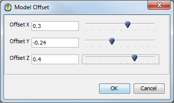
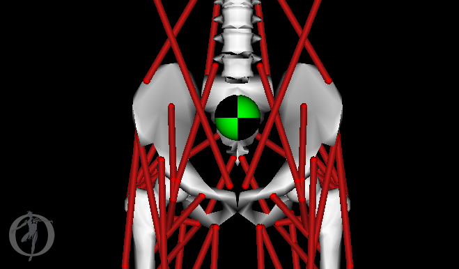

The following Object-Specific Commands are available:
Model Node
When a model is loaded into OpenSim, OpenSim creates a tree representing the objects comprising this model and adds it to the existing tree displayed in the Navigator window. The node for the model will show the model name (as specified inside the .osim file). If the model is marked as "current," the model name is displayed in bold.
The following options are available from the context menu associated with the node for the model. You can access the menu by clicking the right mouse button on the node.
- Make Current: Picking this option makes the model corresponding to the selected node the current model within OpenSim.
- All functions, such as save and close, are applied to the current model. With the default settings, the current model becomes opaque, while any other models are dimmed out (you can change this setting via User Preferences). Also, the node corresponding to the current model is displayed in bold in the Navigator window.
- This option is disabled if the model is already marked as current or if multiple model nodes have been selected. This option for changing the current model is equivalent to picking an entry from the model drop down menu in the OpenSim Toolbar.
- Rename…: Picking this option brings up a window populated with the current name of the model. You type in the new name, and then click OK.
- Names are not checked for duplication, so you can load multiple instances of the same model into OpenSim. The only requirements for names are that they begin with an alphanumeric character and that they do not include spaces.
- Note that the name change is not permanent. The model must be saved with the new name (using File -> Save Model… or File -> Save Model As…), or else the name change is lost.
- Display: This option brings up a cascade menu containing options to control the display of the model. The menu contains a subset of the commands described in the Node Commands (Context Menus) section as well as a Model Offset… option that allows you to move where the model is displayed on the screen, relative to the world coordinate system.
- Model Offset:
|  | To set the model offset value, select the Display -> Model Offset… option from the main OpenSim menu bar. This brings up the dialog box shown below. The default display offset is chosen so that the new model does not overlap with existing models, and is based on the size of a bounding box containing all the models already loaded in OpenSim. You can change this offset, for example, to overlay models on top of each other or to put them far apart, by entering new values in the Model Offset dialog box.
|
|---|
- Info: This option brings up a dialog box that displays information about the model. The values are extracted from the .osim file itself. In particular, the dialog box shows:
- Model Name: The name of the model as specified in the model's .osim file.
- Model File: The full path to the model's .osim file (This is useful if you load multiple models that have the same display name into OpenSim).
- Authors: The list of authors who created the model. Users making significant changes to the model should add their name to this list to get credit.
- References: The list of publications that describe the creation and/or modification of the model. These references should include model limitations and assumptions made to generate and validate the model.
- Save and Save As... allow you to save the model. See Opening, Closing, and Saving Models.
- Close: Picking this option causes the selected model to be closed and unloaded from OpenSim. This is identical to making the model current and pickingFile -> Closefrom the OpenSim main menu bar, following all the same steps (e.g., you will be prompted to save the model and any associated poses before closing).
- Load Motion... allows you to load a motion for the model. See Loading Motions.
Motion Node
When a motion is loaded into OpenSim, it is added to the existing tree in the Navigator window under the Motions node. The node for the motion will show the motion name. If the motion is marked as "current," its name is displayed in bold.
The following options are available from the drop down (context) menu associated with the node for the motion. You can access the menu by clicking the right mouse button on the node.
- Make Current: Picking this option makes the motion corresponding to the selected node the current motion within OpenSim.
- The name of the current motion appears in the motion textbox of the OpenSim toolbar. All video control button functions, such as play and advance, are applied to the current motion.
- The node corresponding to the current motion is displayed in bold in the Navigator window. More information about current models is covered in Opening, Closing, and Using the Navigator Window.
- You can make more than one motion current using the Sync. Motions command below.
- Rename: Picking this option brings up a dialog box populated with the current name of the motion. You type in the new name, and then click OK.
- Names are not checked for duplication, so you can load multiple instances of the same motion into OpenSim. The only requirements for names are that they begin with an alphanumeric character and that they do not include spaces.
- Note that the name change is not permanent unless you save the motion. Use the "Save As…" option from the motion context menu to save the name change.
- Sync Motions: This option is enabled only if you select multiple motions (at most one per model), and it has the effect of displaying all motions concurrently. The display is controlled using the common motion slider embedded in OpenSim's toolbar. As the slider moves, OpenSim puts all models in tandem in their proper time of their respective motions. If a motion does not have a frame of data corresponding to the toolbar's time, a frame is created by interpolating the data. This functionality is useful when comparing different motions.
- Associate Motion Data: You can associate ground reaction force data and more with a loaded motion. See Associating Data with a Motion for instructions.
- Color Muscles from File: As of OpenSim 3.2, you can associate a file with muscle activation data to color the model's muscles during playback (e.g., the results from Static Optimization). See Associating Data with a Motion for instructions.
- Save As... Use this command to save the motion.
Displaying Coordinate Axes for Body and Joint Nodes
The display of the coordinate axes for each body is controlled by clicking the right mouse button on the associated node for that body and selecting the Show Axes option. The Show Axes option is a toggle. A check next to it indicates that the coordinate axes are already being displayed. In this case, clicking on the option will turn off the coordinate axes display. If the axes are not being displayed and the Show Axes option is clicked, then the axes will appear.
For joint nodes, there are two similar options: Toggle Child Frame and Toggle Parent Frame. As with the Show Axes option for a body node, the Toggle Child Frame and the Toggle Parent Frame options are toggle buttons, as their names indicate, accessible via the right mouse button. You click the option to turn it on and click it again to turn it off. The two frames (child and parent) are associated with the two bodies of the joint.
The coordinate axes for both body and joint nodes appear as a set of three orthogonal lines, colored yellow, green, and red.
Enabling and Disabling Muscle and Constraint Nodes
All muscle and constraint nodes can be enabled or disabled via their Enable option. This is a toggle button, accessed by clicking the right mouse button on the node.
If the muscle or constraint is enabled, a check appears next to the Enable option. To disable the muscle or constraint, just click on Enable. To turn the muscle or constraint back on, click on Enable again.
You can also enable and disable muscles and constraints via the Redo and Undo buttons in the Toolbar.
Displaying the Center of Mass of Individual Bodies and the Model
Nodes corresponding to individual bodies have another option to toggle the display of the center of mass. Turning this toggle menu choice on will cause the Center-of-mass of the corresponding body to be displayed as a solid green sphere Similar option is available for the node corresponding to the Body-Set, in this case the System's Center of mass is displayed as a blue checkered ball as shown below.
Displaying the model's center of mass:

{kind=link}
{kind=link}